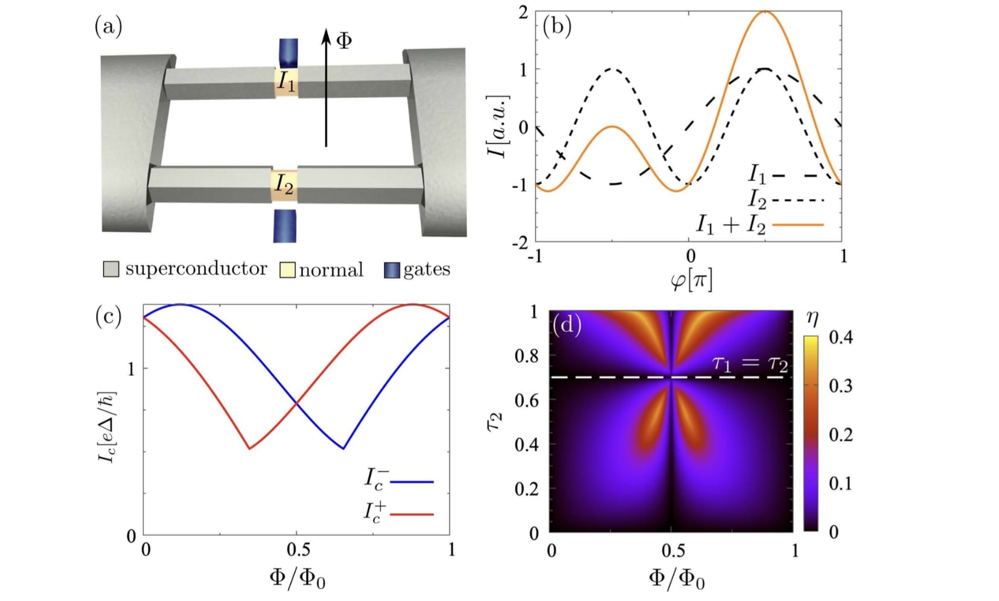
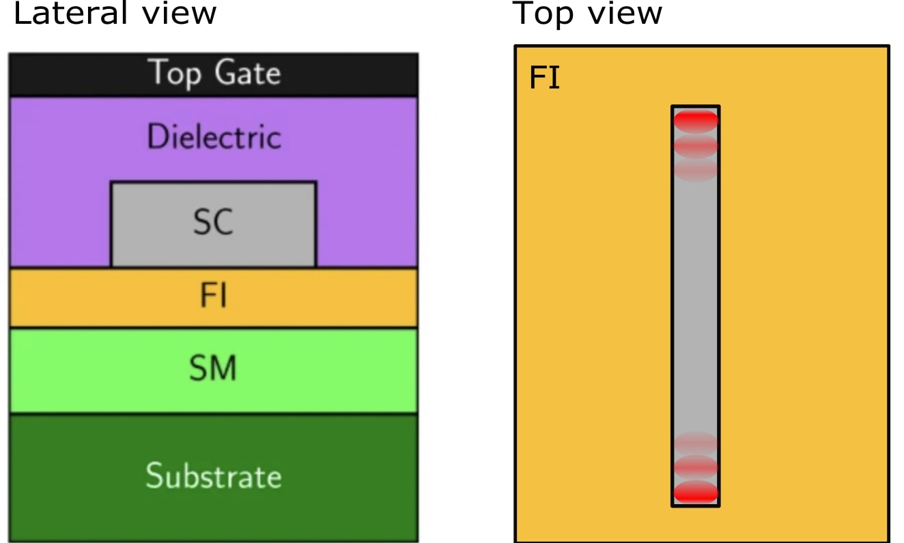
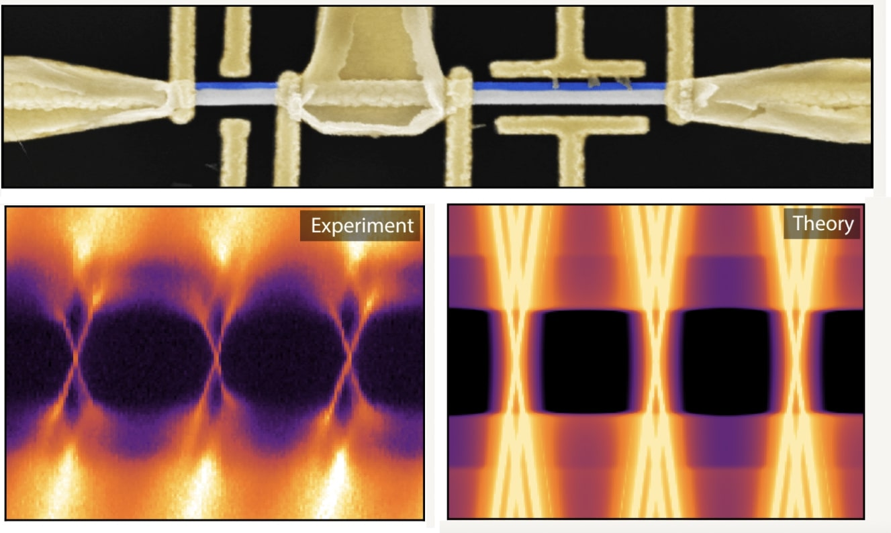
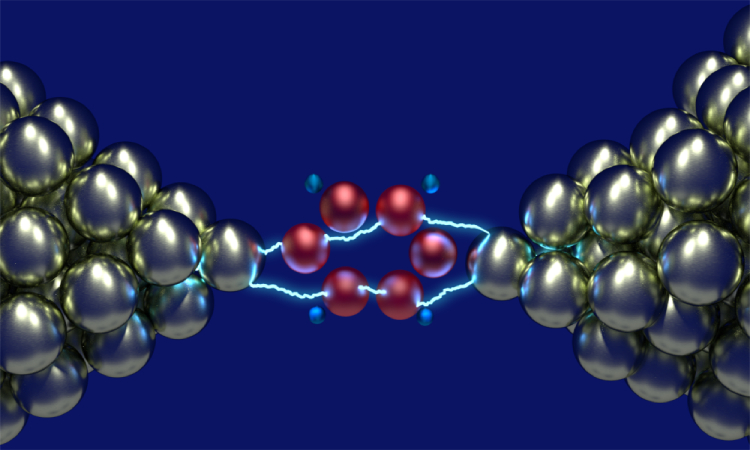
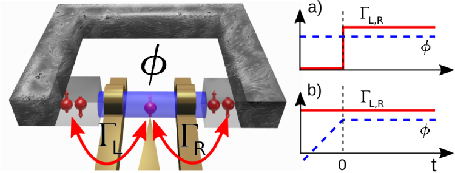
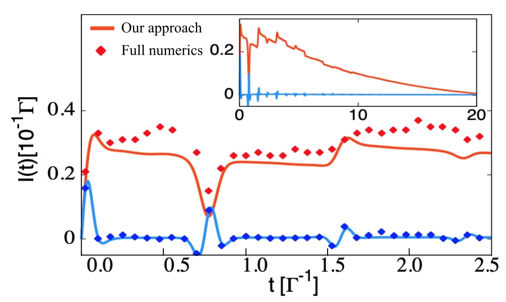

Non-reciprocal transport in superconductors has applications for superconducting electronics. In this work, we propose a tunable Josephson diode using electrostatic gates. We set bounds to the maximal diode efficiency and show a way to systematically increase the effect. [Full article]
22 Dec 2022


Topological superconductivity has given the hope of encoding information in a robust way. However, the required strong fields are detrimental for superconductivity, setting constrains on the system's geometry. In this article, we show that a ferromagnetic insulating layer in between a 2D semiconductor and a superconductor can lead to the topological regime. [Full article]

Subgap states in superconductors play a prominent role in determining their properties. In this letter, we propose a way to determine the spin-degeneracy of subgap states in superconducting islands. We illustrate our proposal by showing that a EuS layer, a ferromagnetic insulator, provides a large splitting of the subgap states. These states can be tuned using electrostatic gates, opening the door to applications ranging from thermoelectrics to quantum information processing. [Full article]
23 Oct 2018

This book summarizes some of the main features of the time-dependent dynamics of nanojunctions. It presents new algorithms and approximations to understand the non-equilibrium and non-stationary properties of quantum devices. The developed methods are used ot describe experimentally relevant situations, including time-dependent fields and driven junctions. Many-body interactions and superconductivity are a central part of the work, providing interesting phenomena, including electron correlations and dyanmical phase transitions. [Full book]

Electron counting statistics fully characterizes the transport through the junction. In this letter, we use the counting formalism to determine the formation time of states inside the superconducting gap. We develop a method to determine the state of the junction. We illustrate our method by analyzing the quasiparticle trapping in the junction. These quasiparticles undermine coherence in the system. For this reason, we develop a way to relax them by using voltage pulses. [Full article]

The vibration degree of freedom in molecules can strongly impact the transport through molecular junctions. Previous theory works stated the possibility of finding a bistable behavior in molecular junctions with a vibrational mode. We develop a new algorithm to simulate the transient properties of these junctions, showing that bistability is instead a long transient behavior. [Full article]